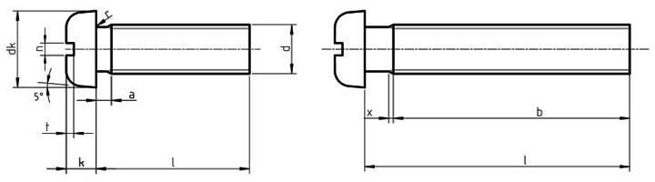

| Thread d | p | a | b | dk | da | k | n | r | rt | t | w | X | ||||
|---|---|---|---|---|---|---|---|---|---|---|---|---|---|---|---|---|
| max | min | nom=max | min | max | nom=max. | min. | nom. | max. | min. | min. | ref. | min. | min. | max | ||
| M1.6 | 0.35 | 0.7 | 25 | 3.2 | 2.9 | 2 | 1.00 | 0.86 | 0.4 | 0.60 | 0.46 | 0.1 | 0.5 | 0.35 | 0.3 | 0.9 |
| M2 | 0.4 | 0.8 | 25 | 4.0 | 3.7 | 2.6 | 1.30 | 1.16 | 0.5 | 0.70 | 0.56 | 0.1 | 0.6 | 0.5 | 0.4 | 1 |
| M2.5 | 0.45 | 0.9 | 25 | 5.0 | 4.7 | 3.1 | 1.50 | 1.36 | 0.6 | 0.80 | 0.66 | 0.1 | 0.8 | 0.6 | 0.5 | 1.1 |
| M3 | 0.5 | 1 | 25 | 5.6 | 5.3 | 3.6 | 1.80 | 1.66 | 0.8 | 1.00 | 0.86 | 0.1 | 0.9 | 0.7 | 0.7 | 1.25 |
| M3.5 | 0.6 | 1.2 | 38 | 7.00 | 6.64 | 4.1 | 2.10 | 1.96 | 1 | 1.20 | 1.06 | 0.1 | 1 | 0.8 | 0.8 | 1.5 |
| M4 | 0.7 | 1.4 | 38 | 8.00 | 7.64 | 4.7 | 2.40 | 2.26 | 1.2 | 1.51 | 1.26 | 0.2 | 1.2 | 1 | 1 | 1.75 |
| M5 | 0.8 | 1.6 | 38 | 9.50 | 9.14 | 5.7 | 3.00 | 2.86 | 1.2 | 1.51 | 1.66 | 0.2 | 1.5 | 1.2 | 1.2 | 2 |
| M6 | 1 | 2 | 38 | 12 | 11.57 | 6.8 | 3.6 | 3.3 | 1.6 | 1.91 | 1.66 | 0.25 | 1.8 | 1.4 | 1.4 | 2.5 |
| M8 | 1.25 | 2.5 | 38 | 16 | 15.57 | 9.2 | 4.8 | 4.5 | 2 | 2.31 | 2.06 | 0.4 | 2.4 | 1.9 | 1.9 | 3.2 |
| M10 | 1.5 | 3 | 38 | 20 | 19.48 | 11.2 | 6.0 | 5.7 | 2.5 | 2.81 | 2.56 | 0.4 | 3 | 2.4 | 2.4 | 3.8 |